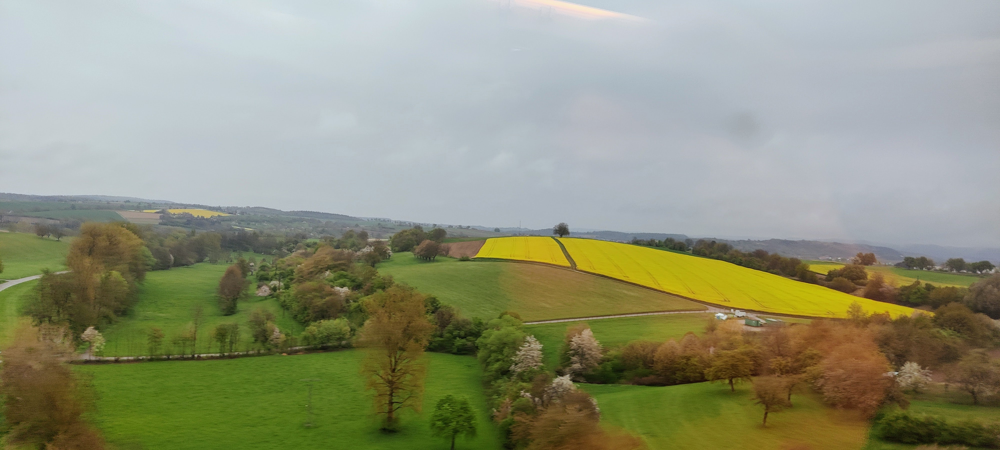
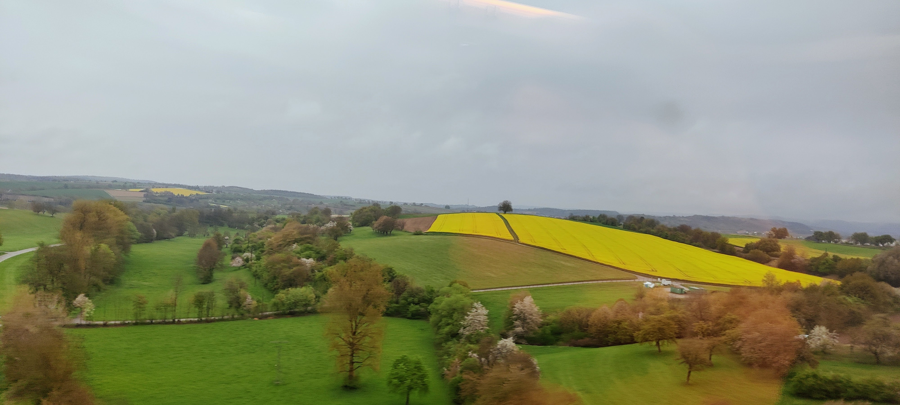

Important events of German history


 



1871
German Empire Established
After the victory in the Franco-Prussian War, the German Empire was officially proclaimed on January 18, 1871, in the Hall of Mirrors at the Palace of Versailles. This event marked the unification of numerous independent German states under Prussian leadership, with King Wilhelm I crowned as the first German Emperor. It initiated a period of rapid industrial growth and increased influence for Germany on the world stage.

1914-1918
World War I
Germany was a leading member of the Central Powers during World War I, a conflict that reshaped Europe’s political landscape. The war caused immense social and economic hardship, and after four years of brutal fighting, Germany faced defeat. The abdication of Kaiser Wilhelm II in 1918 ended the monarchy and led to the establishment of the Weimar Republic, a fragile democracy struggling with political extremism and economic instability.
1933
Nazi Party Rises to Power
In January 1933, Adolf Hitler was appointed Chancellor of Germany, initiating a period of significant political change. The new regime swiftly centralized authority, curtailed political opposition, and established a highly controlled state. This era was marked by increased militarization, extensive propaganda, and policies that ultimately contributed to the outbreak of World War II and the Holocaust—an unparalleled human tragedy.
1945
End of World War II
World War II ended in Europe with Germany’s unconditional surrender in May 1945. The country lay in ruins after years of devastating conflict. Germany was divided into occupation zones controlled by the Allied powers, eventually leading to the creation of two separate states: the Federal Republic of Germany (West Germany) and the German Democratic Republic (East Germany). The division shaped German and global politics throughout the Cold War era.

1990
German Reunification
After the fall of the Berlin Wall in 1989, East and West Germany formally reunified on October 3, 1990. This historic event ended the Cold War division of Germany, restoring it as a single sovereign nation. The reunification brought significant political, social, and economic challenges but also marked a powerful symbol of freedom and unity in Europe.

Present
Modern Germany
Today, Germany is a federal parliamentary republic and Europe’s largest economy. It plays a crucial role in the European Union and global affairs, known for its advanced industries, cultural heritage, and commitment to democracy, human rights, and environmental sustainability. Its rich history continues to shape its vibrant and diverse society.